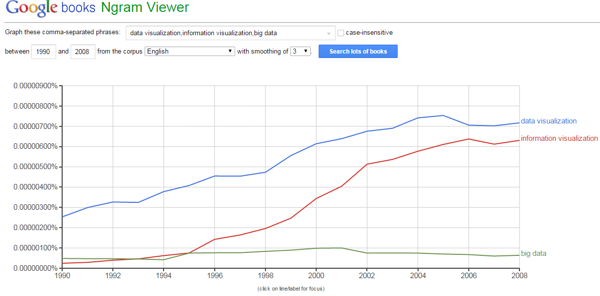
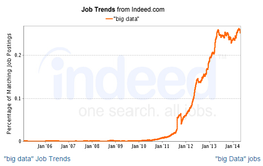

Today, we often see that big data and data visualization are mentioned together. Indeed, in the big data era, people have to deal with data and information that are increasing at an unprecedented speed. There are great potential opportunities for people to achieve deeper, faster insights that can help us to identify key points and make decisions more quickly, easily and correctly, if we have the ability to deal with a lot of data in a short period. On the other hand, emerging data visualization tools are making it easier for business and academics to process and represent huge amount of data in a very short period of time. As a result, they could focus on the understanding of data self (Intel, 2013).
However, if we do a search in Google Book Ngram Viewer (it is a free online digitalization tool that chart the yearly count of selected n-grams (letter combinations) or words and phrases that are found in books digitized by Google Inc.)(Wikipedia,n.d.), we will have the following line graph (look! data visualization everywhere).
It is shown in this line chart that back to the year of 1996, the number of publications related to data visualization or information visualization started to grow, while big data remained somewhat “unpopular” until 2008. Unfortunately, Google Ngram viewer only allow users to search in its database before 2009. So we only have the results to the year 2008 here. Interestingly, actually it was in 2009 that “big data” became a buzzword (McBurney, 2012).
Actually, if we take a look at the number of jobs offered that are related to big data, we could immediately see a sharp growth since 2009.
